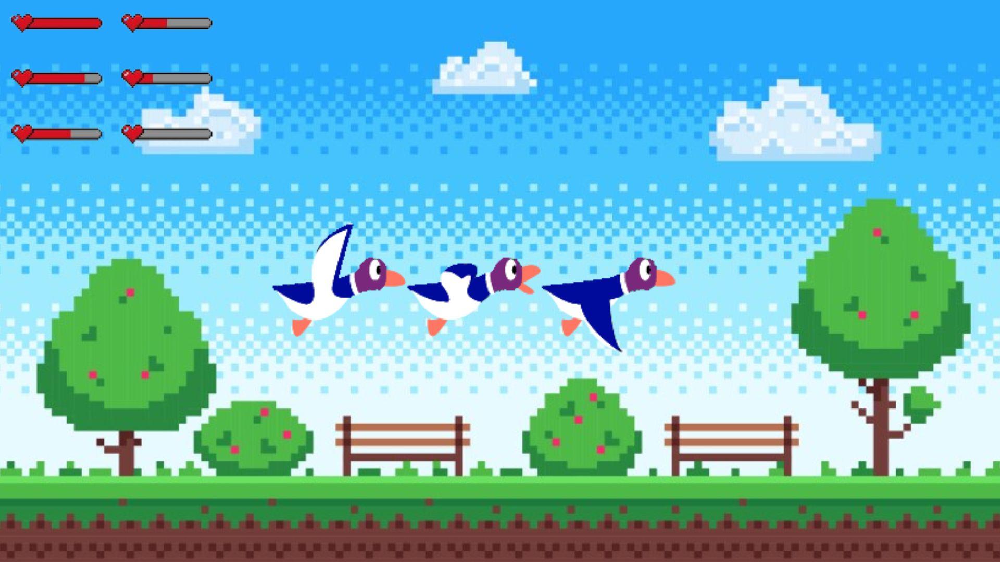

Projects

Linux Commands in C
Recreated essential Linux commands including ls, top, and sudo from scratch using C programming language, enhancing understanding of system processes and low-level operations.
C
Linux
System Programming

Duck Hunt (CSFML)
Recreation of the classic Duck Hunt arcade game using CSFML graphics library, featuring animations, scoring system, refined controls, and improved game mechanics.
C
CSFML
Game Development
Hello Kitty Cars Website
A fun and creative web project combining two unlikely themes: Hello Kitty and cars. Built as a passion project to experiment with design and creativity.
HTML
CSS
JavaScript